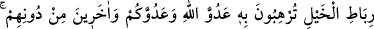

SAVAŞ VE BARIŞ
55. Allah’a göre canlıların en kötüsü kâfirlerdir, artık onlar inanmazlar.
56. Sen kendileriyle anlaşma yaptığın halde onlar hiç çekinmeden, her defa
anlaşmalarını bozarlar.
57. Savaşta onları yakalarsan, darmadağın et ki arkalarındakiler de ibret alsınlar.
58. Bir topluluğun anlaşmaya hıyânet etmesinden korkarsan, sen de onlara karşı
anlaşmayı bozarak aynı şekilde davran. Çünkü Allah hâinleri sevmez.
59. İnkar edenler, (elimizden kurtulup) geçtiklerini sanmasınlar. Onlar bizi âciz
bırakamazlar.
60. Onlara karşı gücünüz yettiği kadar kuvvet ve cihad için bağlanıp beslenen
atlar hazırlayın. Bununla Allah’ın düşmanını, sizin düşmanınızı ve onlardan başka
sizin bilmediğiniz, Allah’ın bildiği (düşman) kimseleri korkutursunuz. Allah yolunda
ne harcarsanız tam olarak size ödenir, hiç haksızlığa uğratılmazsınız.
61. Eğer onlar barışa yanaşırlarsa sen de ona yanaş ve Allah’a dayan, çünkü O,
işitendir, bilendir.
“Allah’a” O’nun hükmüne “göre” yeryüzünde hareket eden “canlıların en kötüsü
kâfirlerdir,” küfürde ısrar eden ve onda kök salan kimselerdir “artık onlar
inanmazlar.” Kalbleri mühürlendiği için artık onların îman etmesi beklenmez.
İnsanlıktan uzak olduklarını îmâ etmek üzere onlar, insanların en kötüsü değil canlıların
en kötüsü olarak vasfedilmiştir. Onlar canlılar sınıfına dâhil edilmiştir. Bunun yanında